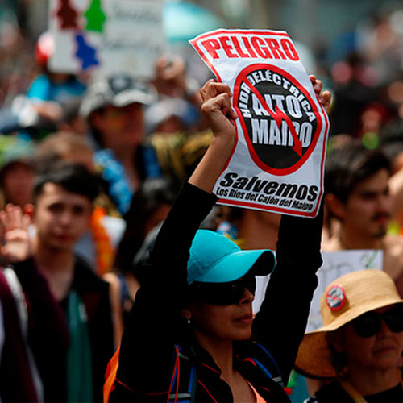

Por Sofía Guzmán, Anibal Lobos, Valentina Villagrán y Catalina Yapur PUBLICADO EL 6 DE JULIO DE 2023
El proyecto Hidroeléctrico Alto Maipo se conforma por dos centrales hidroeléctricas: Alfalfal II y Las Lajas, las cuales utilizan para su funcionamiento las aguas de los ríos Colorado y Maipo. Los cauces de tales
ríos son los que alimentan el agua potable de la mayor parte de la Región Metropolitana.
La matriz eléctrica chilena
Las 68 plantas hidroeléctricas en funcionamiento en el país ofrecen un aporte equivalente al 5% de la matriz energética primaria de Chile.
En términos de aporte de la matriz energética primaria, la energía de fuente hídrica sólo supera al aporte combinado de la energías de fuente solar, eólica, geotérmica y biogás.
Cuando el aporte de las 68 plantas se pone en relación a la matriz eléctrica, que es una parte de la matriz energética, su aporte se estima en el 24%. Y cuando se consideran exclusivamente
las fuentes renovables que aportan a la matriz eléctrica chilena, su aporte se acerca al 45%
Una planta hidroeléctrica transforma la energía hidráulica de un curso hídrico, sea natural o artificial, en energía eléctrica renovable.
Se pueden diferenciar tres tipo de plantas hidroeléctricas, según sean hidroléctricas de embalse, de almacenamiento y de pasada.
Hidroeléctrica de embalse
Hidroeléctrica de almacenamiento
Hidroeléctrica de pasada
En la hidroeléctrica de embalse el agua del caudal se almacena en un embalse artificial creado por una presa. El agua se libera para producir electricidad según el requerimiento del sistema.
En la hidroeléctrica de almacenamiento el agua se almacena en dos embalses a distinta altura. En momentos de mayor demanda energética se realiza el proceso río abajo, dejando caer el agua. Cuando la
demanda energética es menor se realiza un bombeo y el agua es dirigida río arriba.
En la hidroeléctrica de pasada se desvía un porcentaje del caudal de un río a través de una bocatoma. El agua se transporta a través de una tubería y se deja caer por una pendiente hasta una turbina,
el agua es devuelta a su cauce.
Hasta el año 2023, en Chile se han construido ?? plantas hidroeléctricas de embalse, ?? centrales hidroeléctricas de almacenamiento y ?? centrales hidroeléctricas de pasada. Su
contrucción se concentra en la zona ??? del país.
Gráfica figurativa (mapa de Chile, con plantas marcadas, diferenciando su tipo)
El proyecto Hidroeléctrico Alto Maipo
Alto Maipo consiste en dos plantas hidroeléctricas de pasada construidas en la comuna de San José de Maipo, Provincia Cordillera de la Región Metropolitana de Santiago de Chile.
Mapa de detalle de la zona
El nombre de las dos plantas hidroeléctricas del proyecto son Alfalfal II y Las Lajas. Estas plantas usan, respectivamente, las aguas del río Colorado y el río Maipo.
En conjunto, las dos centrales aportarían 531 MW al Sistema Eléctrico Nacional (SEN), que tiene una cobertura del 98,5% de la población nacional y una potencia total de 28.495 MW.
Comprometiendo tal aporte, que no alcanza el 2% de la potencia total del SEN, el proyecto se presenta a su primer estudio de impacto ambiental en el año 2007.
Gráfica No figurativa (Cronología)
El Conflicto socioambiental de Alto Maipo
Las dos plantas de hidroeléctrica de pasada de Alto Maipo toman las aguas de los ríos Colorado y Maipo:
El río Colorado es intervenido por la planta Alfalfal II, antes de que su cauce se convierta en afluente del río Maipo.
El río Maipo es intervenido por la planta Las Lajas, después de haber recibido el aporte del río Colorado.
Después de las dos centrales de pasada del proyecto Alto Maipo, las aguas, que por tales cauces bajan de la cordillera, se convierten en la principal fuente hídrica de la Región Metropolitana de Santiago de
Chile:
abasteciendo al 70% de la Región con agua potable; y
concentrando cerca de un 90% de las demandas de regadío.
Gráfica figurativa (mapa de la zona cordillerana que muestre "antes y después" de las centrales de pasada, con plantas marcadas)
El río Maipo intervenido
En las construcciones de las dos centrales de pasada del proyecto Alto Maipo, se intervino el suelo y la vegetación en torno a los cauces milenarios de los ríos, que ha sido aprovechado por siglos por los
santiaguinos.
Tal intervención ha tenido un efecto directo en la turbiedad de las aguas que llegan a la planta de Las Vizcacha, que es una de las principales productoras de agua potable de la Region Metropolitana.
Y por tal turbiedad y la necesidad de asegurar el suministro de agua potable en la región más habitada del país, fue necesaria una nueva intervención del cauce.
Gráfica mixta (realizar su propiar versiónd de la gráfica de arriba, después de investigar sobre el asunto)
Los vecinos de el Alfalfal II y Las Lajas
Los vecinos del Cajón del Maipo al informarse comienzan una organización para abordar el Estudio Del Impacto Ambiental de Alto Maipo. Al tener limitaciones en la participación efectiva del proyecto como
comunidad, buscaron otras entidades que los apoyaran en contra de la destrucción de territorio y áreas verdes del sector.
A su vez, la Coordinadora Ríos del Maipo, más conocida como “No Alto Maipo”, llevó acciones legales contra Alto Maipo por la existencia de un “convenio secreto” entre AES Gener y Aguas Andinas, una denegación
de los expedientes y denuncias por obras. También han organizado diversas formas de protesta, tanto a nivel comunal como regional, argumentando que:

No es propiamente una central de pasada, es una megarepresa subterránea que interfiere todo el sistema hídrico de la cuenca.
El 84% de la energía producida irá íntegramente a la Minera Los Pelambres de Antofagasta Minerals en el norte del país.
Escasa participación de parte de la superintendencia para defender los derechos de las personas que viven en El Cajón del Maipo.
Los caudales ecológicos considerados no son suficientes para mantener los ecosistemas locales de El Cajón del Maipo.
Los caudales ecológicos considerados no son suficientes para mantener los ecosistemas locales de El Cajón del Maipo
Contaminación de las aguas superficiales y subterráneas con altos niveles de metales pesados.
Los caudales remanentes en el tramo intervenido del río Maipo son insuficientes para continuar con regularidad actividades como el rafting o el kayak, mermando así la actividad de operadores
turísticos.
Desertificación del Cajón del Maipo.
Situación hasta la actualidad
Como impulsor y encargado del proyecto se encuentra AES Gener , la segunda empresa generadora de energía eléctrica más importante de Chile.
Es financiada con accionistas del Banco de Chile, Celfin Capital S.A., además de diversos fondos de pensiones (como Provida, Capital, Hábitat y Cuprum). Cuenta con diferentes filiales en toda latinoamérica,
sin embargo su vínculo más importante es con AES Corp, empresa estadounidense más importante a nivel mundial en temas de energía.
A pesar de ser aprobados los proyectos de esta corporación, una comisión investigadora de la Cámara de Diputados concluyó por unanimidad que Alto Maipo fue aprobado con múltiples irregularidades, agregando
corrupción y tráfico de influencias de personas del gobierno.
En el año 2021 Alto Maipo se acogió al capítulo 11 de la Ley de Quiebras en Estados Unidos, debiendo actualmente más de $1.500 millones de dólares.
Luego a finales del año 2022 se detectó un desprendimiento de túnel en la central Las Lajas, lo que ocaciono la detención del funcionamiento de esta y de Alfalfal II
Actualmente el proyecto se encuentra sin funcionamiento, teniendo como fecha estimada para la solución del accidente el 30 de junio de 2023. No obstante, el retorno al servicio deberá esperar hasta 2024.